地政学
ブルームフォンテーンは南アフリカの司法首都で、最高控訴裁判所を抱えます。フリーステート中央部から州政治、法、農業地帯、レソト近接性を結び、三首都制の一角として国の制度を支える都市です。内陸の要所です。
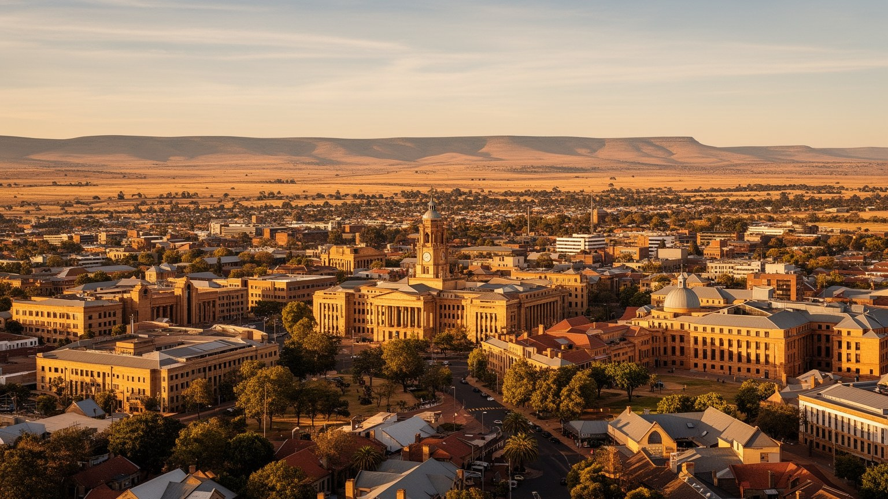
🇿🇦 南アフリカ / フリーステート州 / World City Atlas
南アフリカの司法首都であり、フリーステート州の行政、教育、医療、農業サービスを束ねる内陸都市です。最高控訴裁判所、大学、鉄道、セソト語とアフリカーンス語の記憶、乾いた高原の暮らしが重なります。
都市の骨格
ブルームフォンテーンはケープタウンの議会、プレトリアの行政と並び、南アフリカの司法首都として記憶されます。州都、大学都市、農業サービスの中心、鉄道の結節点、タウンシップを抱く生活都市でもあります。
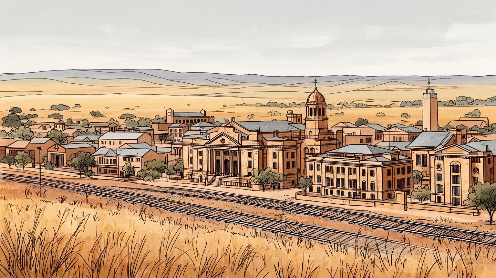
ブルームフォンテーンは南アフリカの司法首都で、最高控訴裁判所を抱えます。フリーステート中央部から州政治、法、農業地帯、レソト近接性を結び、三首都制の一角として国の制度を支える都市です。内陸の要所です。
雇用は司法、州行政、大学、病院、農業サービス、小売、鉄道、物流、建設に支えられます。安定した公的部門のそばで、若者失業、長い通勤、非公式商業が目立ち、州都の豊かさも均一ではありません。課題も濃い街です。
セソト語、アフリカーンス語、英語、教会、学校、ラグビー、文学、反アパルトヘイトの記憶が交わります。司法の静けさの背後に、移住、土地、言語、信仰をめぐる複数の記憶があります。祈りと記念も重なる街です。
旅行者は最高控訴裁判所、博物館、ナバルヒル、動物園、郊外の草原を巡ります。住民の日常は水、電力、学校、病院、家賃、通勤、買い物にあり、落ち着いた州都像と生活の緊張が同居します。静かな奥行きです。今も。
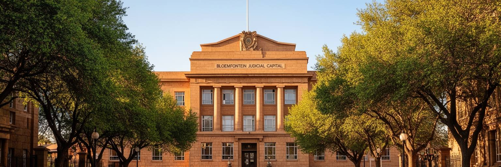
ブルームフォンテーンは、南アフリカの三首都制の中で司法首都として位置づけられます。最高控訴裁判所が置かれ、プレトリアの行政、ケープタウンの議会と役割を分けながら、国家制度の一部を担います。街の政治性は大統領府や大議場のような派手さではなく、裁判、法律家、大学の法学教育、記録、判例、州都行政の静かな積み重ねにあります。司法首都であることは、観光看板の肩書きだけではありません。アパルトヘイト期の法律が人々を分け、民主化後の憲法秩序が権利を回復しようとしてきた国で、法の場所は強い意味を持ちます。裁判所の建物を眺める時、そこには制度への信頼と、司法へ届きにくい住民の距離が同時にあります。低所得地域から法的支援へアクセスする難しさ、言語、費用、移動、教育の差は、司法首都の足元に残る課題です。ブルームフォンテーンを読むには、制度の中心という誇りと、法が日常生活へ本当に届くかという問いを重ねる必要があります。静かな官庁街は、国家を支える形式だけでなく、権利を実感できる生活条件を映します。裁判所周辺の整った通りと周縁住宅地の距離は、法の理念と現実の距離でもあります。弁護士事務所、大学の法学部、通訳、支援団体、図書館が近くにあることも、司法首都を日常の仕組みへ近づけます。法は建物だけでなく、相談できる人と移動できる道にも宿ります。
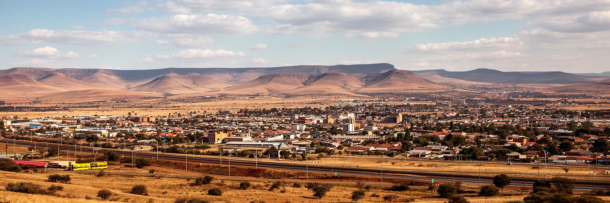
ブルームフォンテーンはフリーステート州の中央部にあり、広い草原、高原の乾いた空気、農地、鉱山都市、レソトへ向かう道路網の中で州都機能を担います。海港の都市でも金融の巨大中心でもありませんが、内陸の距離を束ねる位置が重要です。州内の農村、旧鉱山地域、小都市、タウンシップから人と行政需要が集まり、病院、学校、裁判所、大学、商業施設、交通機関がサービスを提供します。広い土地は空の大きさと穏やかな景観を与えますが、同時に公共交通やサービス供給の距離を長くします。雨が少ない年には農業と水道が揺れ、冬の乾燥と寒さは低所得住宅の生活を厳しくします。都市を中心部だけで見ると、フリーステートの広がりは背景に消えてしまいます。しかしブルームフォンテーンの存在は、州全体の学校、病院、農業市場、行政手続き、裁判、買い物がここへ向かう流れによって支えられます。草原の州都を読むことは、都市が周辺の農村とどれほど深く結びついているかを見ることです。遠い町から来る患者、学生、裁判関係者、買い物客の移動時間も、州都の役割を測る物差しになります。州境を越えたレソトとの往来も、商業、医療、教育の需要を広げます。中心にあることは地図上の位置だけでなく、遠い生活を受け止める責任でもあります。その責任は州都を読む基本になります。
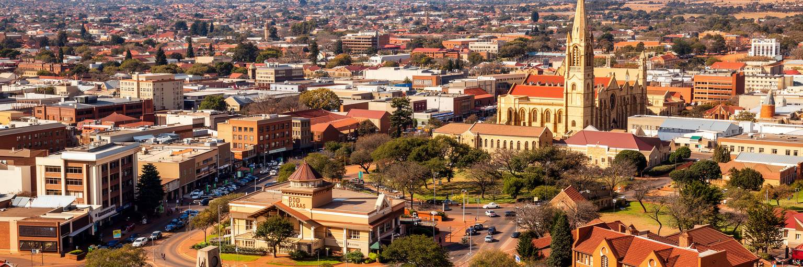
ブルームフォンテーンの記憶は、単一の言語や共同体では語れません。セソト語、アフリカーンス語、英語が学校、教会、裁判、家庭、市場、スポーツの場で重なり、オレンジ自由国、ボーア戦争、植民地支配、アパルトヘイト、民主化後の再編が都市の地層を作ります。アフリカーナーの記念碑や博物館は、地域の歴史を伝える一方で、誰の経験が長く中心に置かれ、誰の記憶が遅れて公共空間へ出てきたのかを問いかけます。黒人居住地の歴史、強制移動、労働、学校、教会、反アパルトヘイト運動の経験を抜きにすると、都市は整った州都の表面だけになってしまいます。言語は単なる会話の手段ではなく、教育機会、行政へのアクセス、文化的な誇り、排除の記憶と関わります。ブルームフォンテーンでは、落ち着いた通りの背後に、土地、名前、記念碑、学校の言語をめぐる長い交渉があります。複数の記憶を並べて読むことで、都市の静けさは中立ではなく、歴史をどう扱うかの結果だと分かります。博物館、教室、礼拝、家庭の語りが、それぞれ異なる都市像を残します。共存は過去を薄めることではなく、異なる痛みと誇りを同じ公共空間で扱う力です。若い世代がどの言語で学び、どの記念日に何を語るかは、都市の未来にも関わります。名前を呼ぶ言葉の選び方まで、歴史は日常に残ります。重要です。
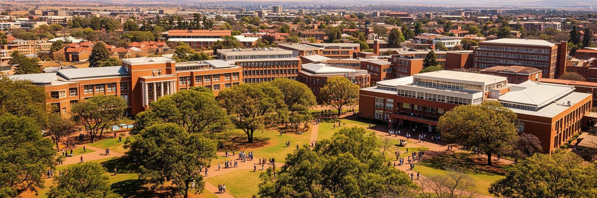
ブルームフォンテーンは大学と医療の都市でもあります。フリーステート大学を中心に、法学、医学、農学、教育、社会科学、自然科学を学ぶ学生が州内外から集まり、講義室、図書館、学生寮、病院、研究施設が都市の日常に若いリズムを加えます。大学は司法首都の法的な機能と結び、農業地帯の研究、言語政策、教育格差、地域医療にも関わります。学生の存在はカフェ、賃貸住宅、交通、小売、文化活動を支えますが、学費、住居費、奨学金、言語、デジタル環境の差は重い課題です。南アフリカの高等教育は、民主化後も過去の排除を乗り越える途中にあり、キャンパスは学びの場であると同時に、抗議、対話、改革の場でもあります。地方から来た若者にとって、ブルームフォンテーンは専門職へ近づく入口ですが、卒業後に仕事へつながるとは限りません。大学都市を読むには、建物やランキングではなく、誰が学べて、誰が途中で離れ、誰の研究が地域の問題へ戻るかを見る必要があります。病院や研究所があることで、州都は知識だけでなく医療への信頼も担います。若者が都市に残れるかどうかは、住まい、交通、安全、雇用がそろうかで決まります。キャンパスの外にも、私塾、看護学校、図書館、研修施設があり、学び直しを支えます。教育の都市は、卒業証書だけでなく、地域の仕事へ知識を返す仕組みで評価されます。
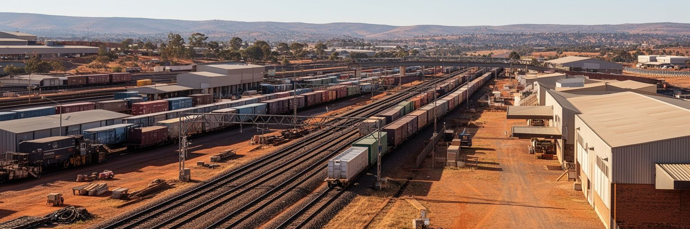
ブルームフォンテーンは内陸都市として、鉄道と道路の結節点で育ってきました。ケープタウン、ヨハネスブルグ、東ケープ、クワズール・ナタール、レソト方面へ向かう移動の中間にあり、旅客、貨物、軍事、郵便、農産物の流れが都市の成長を支えました。現在も高速道路、物流施設、バスターミナル、鉄道の名残が、州都の役割を形作ります。鉄道インフラは南アフリカ全体で老朽化、治安、運行信頼性の課題を抱え、道路輸送への依存が高まっています。これは農産物、家畜、燃料、建材、医療物資、学生の移動に影響します。公共交通が弱い地域では、ミニバスタクシーや自家用車、長距離バスが生活を支えますが、運賃と安全は家計に重くのしかかります。ブルームフォンテーンの物流を読むには、駅の歴史だけでなく、早朝に郊外から来る労働者、州内の町から病院へ向かう家族、農家の商品を運ぶトラック、学生の帰省を見る必要があります。内陸の結節点は、港のような華やかさはなくても、地域の距離を縮める実務で都市を支えます。道路の維持、駅周辺の安全、貨物の効率は、地味ですが州経済の基盤です。移動が滞る時、都市の中心性はすぐ生活の負担へ変わります。物流の遅れは店頭価格、病院の在庫、農家の収入へ広がります。結節点としての強さは、古い駅を誇ることより、毎日の流れを確実に保つ力にあります。
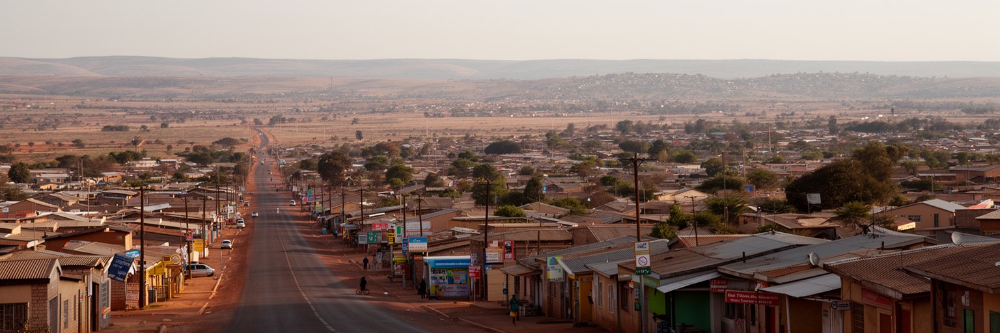
ブルームフォンテーンを理解するには、中心部だけでなく、マンガウン、ボチャベロ、タバ・ンチュなどの住宅地とタウンシップを見なければなりません。そこには家族、教会、学校、スパザショップ、理髪店、葬儀、サッカー、通勤、失業、若者の学びがあり、州都の労働力と文化を支えています。アパルトヘイト期の空間分離は、現在も住まいと仕事の距離として残ります。中心部の裁判所、病院、大学、小売施設へ通う人にとって、交通費と時間は実質的な生活費です。公営住宅、インフォーマルな増築、賃貸部屋、家族同居は、都市で生きるための工夫ですが、水道、電力、排水、道路、学校の質に差が出ると、機会も不均等になります。タウンシップを貧困だけの場所として描くと、住民の商い、音楽、信仰、連帯、教育への努力を見落とします。一方で、活気だけを強調すると、土地、サービス、治安、雇用の構造的な不平等を軽く扱ってしまいます。ブルームフォンテーンの住宅問題は、司法首都の制度的な顔と、住民が毎日移動して働く生活都市の顔をつなぐ核心です。住まいが安定すれば、学校登録、仕事探し、医療、銀行利用も進みます。家の位置は住所以上に、都市へ参加する権利を左右します。街灯、歩道、近い診療所、安い交通がそろうほど、住宅地は単なる周縁ではなく生活の拠点になります。都市の公平性は、中心から離れた地区で測られます。
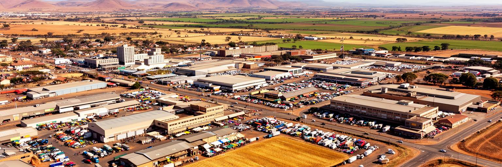
ブルームフォンテーンの経済は、裁判所や大学だけでなく、フリーステートの農業地帯と深く結びついています。州は穀物、家畜、酪農、食品加工、農業機械、獣医、金融、保険、物流、卸売に支えられ、都市はそれらのサービス拠点になります。農家は部品、燃料、銀行、法律、医療、学校、行政手続きのために州都へ来ます。商業施設や整備工場、倉庫、専門職の仕事は、広い農村圏の需要によって成り立っています。一方で農業は気候、水、投入費、土地改革、労働条件、国際価格に左右されます。干ばつや燃料価格の上昇は、農家だけでなく、都市の小売、運送、雇用、食料価格にも波及します。農業労働者や周辺小都市の住民は、州都の経済に関わりながら、低賃金やサービス不足に直面しやすいです。ブルームフォンテーンを農業サービス都市として読むには、都市の店先と草原の生産現場を切り離さないことが必要です。穀物サイロ、家畜市場、大学の農学研究、弁護士事務所、銀行の融資、病院への移動は、同じ地域経済の一部です。州都の安定は、農村の水と土と労働に支えられています。食卓に届く穀物の価格は、遠い畑と市内の家計を静かにつなぎます。農業の利益が教育、道路、医療へ戻る時、都市と農村の関係は強くなります。逆に不作や借入負担が続けば、州都の商店街にも影が差します。重要です。
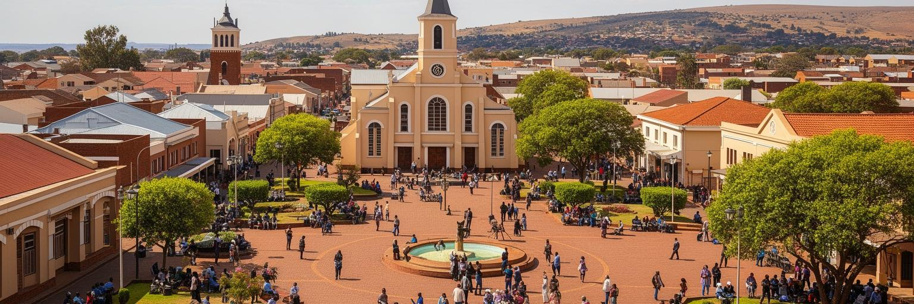
ブルームフォンテーンの日常には、教会、学校、地域団体、スポーツクラブ、葬儀、礼拝、慈善活動が深く入り込んでいます。キリスト教会は礼拝の場所であるだけでなく、困窮者支援、子どもの学習、家族相談、葬送、若者の活動を支える社会的な拠点になります。アフリカーンス語系の教会、セソト語の礼拝、英語の集会、独立系教会がそれぞれの共同体を持ち、都市の言語と歴史を映します。宗教は時に保守的な規範や排除を生むこともありますが、失業、病気、暴力、孤独に直面する住民にとって、教会や地域のネットワークは重要な安全網です。市民生活は裁判所や市役所だけで作られるわけではありません。学校の保護者会、地域清掃、スポーツ大会、追悼式、抗議、相談窓口が、都市の信頼を少しずつ作ります。ブルームフォンテーンの落ち着いた州都像の奥には、こうした小さな集まりが支える日常があります。公共サービスが不安定な時ほど、宗教団体や市民団体への負担は増えますが、それだけに頼れば不平等も固定されます。信仰と市民活動を読むことは、制度と住民の間を埋める実務を見ることです。祈りの場、学校、診療、食の支援がつながる時、都市は見えにくいところで支えられます。週末の礼拝、葬儀、募金、試合、地域会議は、人々が互いの近況を確かめる時間です。市民のつながりは、危機の時に最初に働く都市の力です。
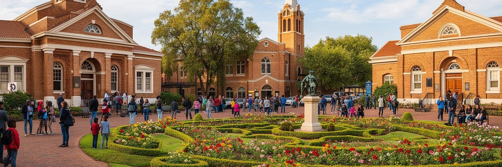
ブルームフォンテーンの観光と遺産は、最高控訴裁判所、国立博物館、戦争記念、ナバルヒル、動物園、歴史的建築、周辺の草原を通じて体験されます。ボーア戦争やオレンジ自由国の記憶は、地域の帰属意識を作ってきましたが、その語りは植民地支配、黒人住民の経験、女性と子どもの犠牲、強制移動、アパルトヘイトの制度とも結びつきます。博物館は展示物を並べるだけでなく、どの記憶を中心に置き、どの記憶を後から回復するかを問う場所です。観光客が街を訪れる時、落ち着いた州都の建物や丘の眺めは魅力的ですが、それを単なる静かな地方都市として消費すると、土地と法と人種の複雑な歴史を見落とします。遺産を読むには、記念碑の名前、展示の言語、保存される建物、消えた地区、教会や学校の記憶を合わせる必要があります。ナバルヒルから眺める都市は穏やかに見えますが、その下には中心部、タウンシップ、大学、裁判所、農業サービスの関係があります。ブルームフォンテーンの観光の価値は、大都市の派手さではなく、南アフリカの制度と記憶を静かに考えさせる点にあります。博物館が多声的な説明を増やすほど、訪問者は美しい展示の裏にある問いへ近づけます。ガイド、教師、家族の語りが加わると、展示は過去の物ではなく現在の対話になります。遺産を守る仕事は、観光収入だけでなく記憶の公平性にも関わります。
ブルームフォンテーンは高原性の気候にあり、夏は雷雨を伴う雨、冬は乾燥と冷え込みが目立ちます。空は広く、晴天が多い一方、水の確保とインフラの維持は都市生活の大きな課題です。フリーステートの農業は雨量に敏感で、干ばつは畑、家畜、食料価格、農村雇用、都市の商業へ連鎖します。市内でも断水、配管の老朽化、貯水、料金、低所得地域へのサービスの差が、日常を左右します。水を安定して得られる世帯と、遠くまで運ぶ世帯では、勉強、家事、衛生、商売に使える時間が変わります。電力の不安定さもポンプ、冷蔵、病院、学校、小商いに影響します。気候変動が暑さ、極端な雨、干ばつを強めれば、都市は樹木、日陰、排水、節水、修理体制をさらに重視しなければなりません。ブルームフォンテーンの穏やかな気候イメージは、インフラが維持されて初めて生活の快適さになります。水道の蛇口、学校のトイレ、病院の予備電源、農村から来る食料の価格は、すべて同じ環境条件に結びついています。気候を読むことは天気を読むことではなく、誰が不足の負担を背負うかを見ることです。乾いた高原では、水の管理が都市の公平性をはっきり示します。雨水の貯留、漏水修理、料金支援、街路樹の管理は、地味でも生活を守る政策です。気候の穏やかさに頼るだけでは、将来の暑さと不足には備えられません。
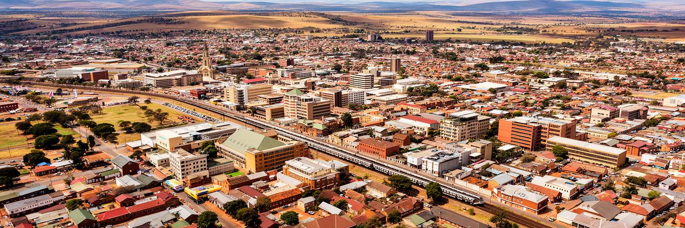
ブルームフォンテーンを読む面白さは、巨大経済都市ではない場所に国家の重要な機能が置かれている点にあります。最高控訴裁判所は司法首都としての重みを示し、州政府、大学、病院、農業サービス、鉄道と道路、タウンシップ、教会、博物館が、フリーステートの生活を支えます。都市は一見静かですが、その静けさの中には、南アフリカの法、土地、言語、教育、農業、記憶、格差が凝縮されています。プレトリアやケープタウンのような政治的な派手さは少ないものの、ここでは制度が地方の生活へどのように届くかが見えやすいです。司法の建物、大学の講義、病院の待合室、農業機械の店、タウンシップの通勤、教会の支援、博物館の展示を同じ地図に置くと、州都の役割は行政区分を超えて広がります。ブルームフォンテーンの価値は、観光名所の数だけでは測れません。むしろ法の理念と生活の距離、農村と都市の相互依存、記憶の語り直し、若者が学び働けるかという問いを静かに提示する点にあります。草原の空の下で、都市は大きな声を上げずに南アフリカの制度と日常をつないでいます。その接続が弱い場所ほど、都市の課題もはっきり見えます。だからこの街は、中心性を誇るだけでなく、周縁の住民へ制度を届ける力で評価されます。小さく見える州都の静けさには、国の形を測る大きな手がかりがあります。